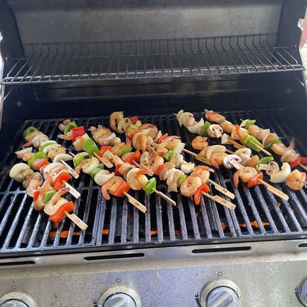

Kabobs

This top-rated homemade kabob recipe features tender chicken, juicy beef, and colorful veggies.
These grilled kabobs made with steak and chicken stay moist and flavorful. The meat and vegetables are marinated in a honey teriyaki sauce, then skewered and grilled until tender and delicious.
Ingredients
- Sauces: The marinade starts with a sweet-savory mixture of teriyaki sauce and honey.
- Seasonings: Garlic powder and ground ginger give the marinade loads of bold flavor.
- Meat: These meaty kabobs call for both chicken breasts and a pound of beef sirloin.
- Vegetables: You'll need bell peppers, sweet onions, and whole fresh mushrooms.
Steps
step 1
- Make the marinade.
step 2
- Marinate the meat and vegetables.
step 3
- Thread the ingredients onto skewers.
step 4
- Grill the kabobs over medium-high heat.